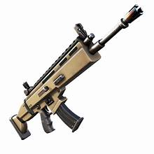
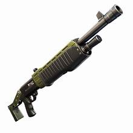
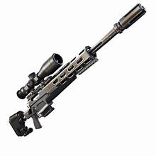
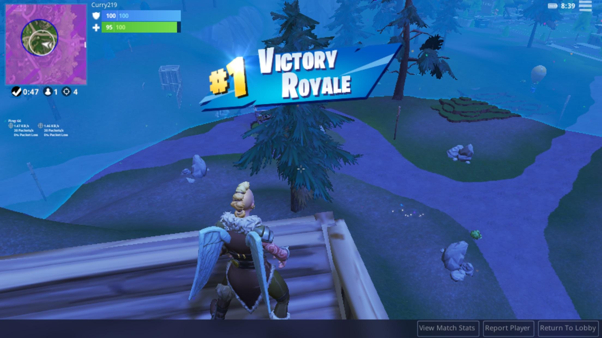

Had always been an avid gamer, but nothing got his adrenaline pumping quite like Fortnite. The vibrant landscapes, the strategic building, and the thrill of the hunt drew him in every day. But today was different.Today, he was up against the pros.
Battle Royale lobby was buzzing with familiar names—streamers, tournament winners, and high-ranked players known across the Fortnite community. Max's heart pounded in his chest as he geared up, knowing this was his chance to prove himself.
Battle Bus flew over the island, and Max marked his drop spot: Lazy Lake. He dove with precision, landing smoothly on the roof of a two-story house. Within seconds, he had a blue AR and a shield potion. The game was on.

He moved through the house, he heard footsteps. Another player. Max crouched, listening intently, then sprung into action, his reflexes sharp. A quick build fight ensued, and Max outmaneuvered his opponent, securing his first elimination. One down, ninety-nine to go.
  Made his way toward the center of the circle, gathering resources and upgrading his gear. He encountered several more players along the way, each fight more intense than the last. His confidence grew with every victory, but he knew the real challenge was yet to come.
As the storm closed in, the number of players dwindled. Max found himself in the final circle with only a handful of players left. He took a deep breath, his hands steady on the controller. This was it—the moment he'd been preparing for.
The final circle was a chaotic mess of builds and gunfire. Max spotted one of the pros, a streamer he recognized, building frantically. He decided to take a risk. Launching a barrage of rockets, he brought down the pro's structure, catching him off guard. Another elimination for Max.
It was down to the last three. Max could see the other two players battling it out. He took advantage of the distraction, positioning himself for the final strike. One player fell, and it was just Max and the last pro standing—a tournament champion known for his incredible aim.
Max built a high ground advantage, but the pro was relentless, breaking through his defenses. Max could feel the pressure, but he kept his cool. He remembered his training, his countless hours of practice. As the pro launched an assault, Max countered with a perfectly timed edit, exposing the pro's position.
With a quick flick of his wrist, Max lined up his shot and fired. The screen lit up with the words "Victory Royale!" Max let out a triumphant shout, his heart racing with exhilaration.
He had done it. Max had won a Battle Royale against the best of the best. His name lit up the leaderboard, and the chat in his stream exploded with congratulations. Max smiled, knowing this was just the beginning. Today, he was a champion. Tomorrow, who knows what heights he would reach?
fortnite about me